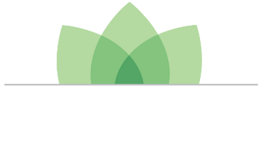

PROTOTYPE
Data:
Probable Sourcing Layers
(TSC),
Forest Change 2000-2012
,
Hansen
Show Deforestation

Deforestation in my Supply Chain
App to Answer: TSC Key Performance Indicator
I source my commodities from here:
USA - Cocoa
USA - Coffee - Arabica
USA - Coffee - Robusta
USA - Coffee - All
USA - Cotton
USA - Maize
USA - Wheat
Global - Banana
Global - Barley
Global - Cocoa
Global - Coffee - Arabica
Global - Coffee - Robusta
Global - Coffee - All
Global - Maize
Global - Oil Palm
Global - Rice
Global - Soy Bean
Global - Wheat
I source this many millions of tons:
Of which, the following quantity may be from land recently deforested:
0 tons
Breakdown by Region